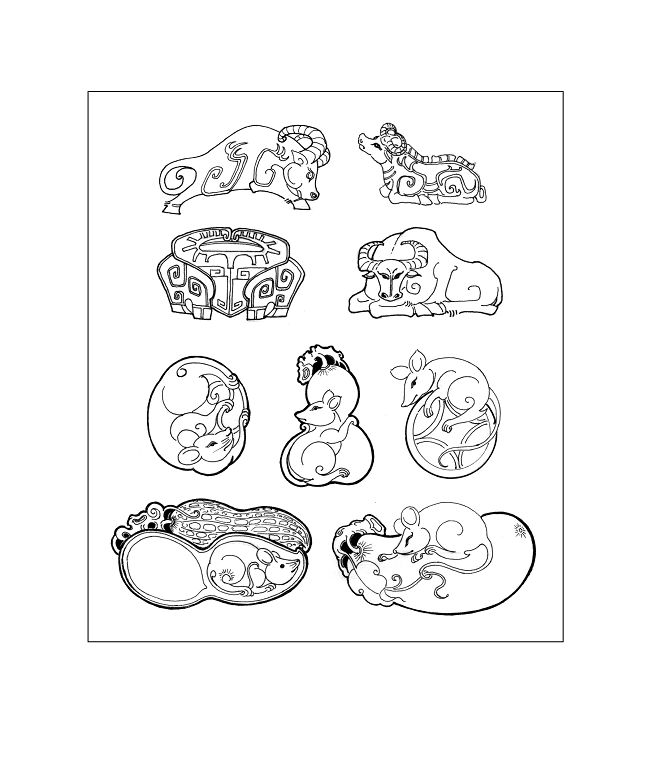
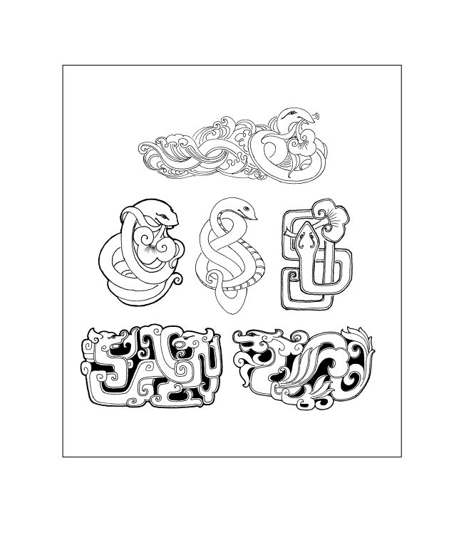
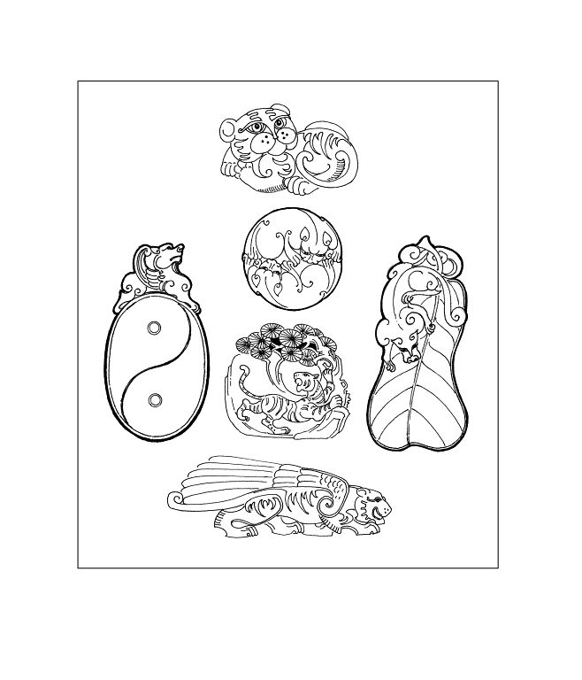
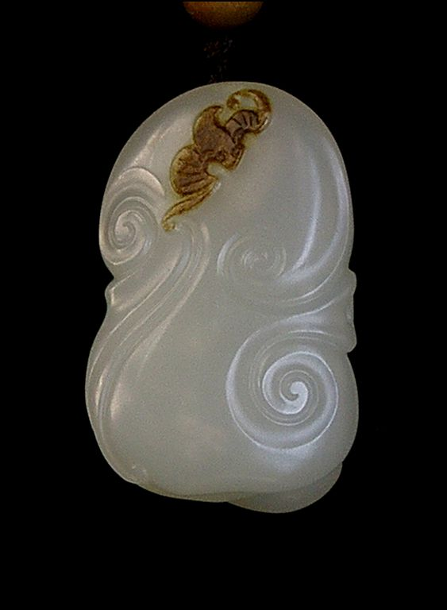

项目课程(2) 玉佩设计与制作
玉佩饰早在刀耕火种的年代，就为原始先民所钟爱。他们把玉打磨成器，既作为装饰，又作为护身符。在人类文明的历史长河中，玉佩始终伴随人们，传递着亲人间的祝福、朋友间的纽带、恋人间的情思……无限情怀融于方寸之中。 玉佩形式虽小，但它的文化内涵和技艺含量在玉器琢磨中有着广泛和典型的意义，因此，本章以玉佩琢磨来作为玉器工艺的入门课程。 学习目标： 1.了解玉佩的图案和寓意 2.掌握玉佩的意临方法 3.掌握玉佩的加工工艺 教学要求： 通过本章玉佩工艺的实训课程，能了解民族图案以及它的吉祥含意；基本能掌握玉佩的琢磨工艺，基本能掌握不同的工具使用，以及主要掌握浮雕、透雕、线刻工艺技巧。 实践项目： 玉佩的意临和制作
一、玉佩的图案和寓意 “琢磨呈吉祥，才能合人意”，这“吉祥” 便是我们民族特有的审美心理。我们的民族经过了漫长的历史进程，积淀了特有的民俗民风，如对生命的礼赞、对邪恶的抗争、对理想的追求、对美好生活的向往和对于挫折的不屈不饶。由此形成了浩瀚而丰富多彩的吉祥用语和图案。 历代玉工以温润的玉作为载体，把生活中常见的自然事物或意念中冥想的神灵世界化作有意味的形式，赋予玉佩一丝情缘、一种企盼、一个祝福……。玉佩的题材广泛，以类别区分主要有以下几个方面： 1.荷塘田园 对耕读世家来说，走出家门就能见到荷塘和田园，是最为理想的生活环境。因此那些人们喜闻乐见的动植物，如莲花、菱藕、莲子、鲤鱼、河蟹、河蚌、青蛙、鸳鸯、灵龟、瓜豆、素果、五谷、九穗、蝶、螺、蝉、螳螂、鹌鹑等，是最适合为玉佩饰取材的。琢玉者再把这些事物加以理想化，并赋予其作品无限美好的想象。 如：连年有余，图案由莲花和鲤鱼组成，表示生活年年富裕的愿望。 瓜瓞绵绵，图案由绵延不断的藤上结满着瓜果和飞舞的蝴蝶组成，寓意繁衍发展、子孙昌盛、丰收在望。 和和美美，图案由荷花和梅花组成，表示和气生财，生意兴隆，事业美好。 图1-1-1
图1-1-2
图1-1-3
图1-1-4
图1-1-5
图1-1-6
图1-1-7
图1-1-8
图1-1-9
图1-1-10
图1-1-11
2.山野珍禽 高山流水、鸟语花香，人倾心于自然，寄情于山野花鸟之间。这是我们民族艺术审美观的一贯诉求，积淀着朴素的天人合一思想。玉是山川之精髓，再用来雕琢山野珍禽，称得上是回归于自然。此类题材有高山流水、鹤立松柏、梅兰竹菊、灵芝佛手等；还有白头、画眉、雄鹰、松鼠、山鹿等。 如：喜鹊登梅，图案是喜鹊落在梅枝上，表示喜上眉梢。 福海寿山，图案由寿山、蝙蝠、海水组成，寓意福如东海，寿比南山。 君子之交，图案由兰花（君子）、灵芝（之）、礁石（交）组成，以象征高尚的友谊。 图1-1-12
图1-1-13
 图1-1-14 图1-1-14图1-1-15
图1-1-16
图1-1-17
图1-1-18
图1-1-19
图1-1-20
3.生肖灵兽 玉佩中的动物形象一类是生肖，使自己的属相和有灵性的玉结合在一起，作为护身之物。另一类是灵兽，如龙、麒麟、天禄、避邪等，再用玉雕琢而成，有镇邪消灾之寓意。生肖和灵兽大部分采用变形的手法雕琢，一是为了符合佩饰的形式，二是为了使动物形象变得更为生动有趣。 图1-1-21
图1-1-22
图1-1-23
图1-1-24
图1-1-25
图1-1-26
图1-1-27
图1-1-28
图1-1-29
图1-1-30
4.佛仙祝福 具有灵性的玉自然而然的和神灵联系在一起。玉佩的佛仙题材主要有释迦佛、弥勒佛、观音菩萨、罗汉、飞天，还有八仙、寿星等；祝福类有：吉祥如意、人生如意、富贵荣华、福如东海、福在眼前、吉庆有余等。 图1-1-31
图1-1-32
图1-1-33
图1-1-34
图1-1-35
图1-1-36
以上的玉佩图案只是我们民族图案的一个缩影，映射出特有的吉祥观念，根据不同图案的含意大致可分为：圆满喜庆、 繁荣不息、祝福祈祥、神灵避邪等。民族图案的题材、内容、图案是永恒的、延续着、发展着，然而它的表现形式是多样的，在以后的玉器设计和制作中会出现类似的题材，但它以别样的形式出现。 二、玉佩的意临 在玉佩的制作过程中，我们可以参照古代玉佩进行临摹，但是，玉料的外形和参照的图片在造型上不可能完全一致，在此前提下，制作玉佩的造型可以加以改变，使制作完成的玉佩造型和摹本基本相似，在这一“意临”过程中，既学习了古代玉佩的造型样式，又使自我的造型能力到了一次训练。 玉佩图例参考：图2-2-1 至图2-2-29  图2-2-1 商代 鹰形玉佩 图2-2-1 商代 鹰形玉佩  图2-2-2 商代晚期 黄玉螳螂形佩 图2-2-2 商代晚期 黄玉螳螂形佩  图2-2-3 春秋 兽面叶形佩 图2-2-3 春秋 兽面叶形佩 图2-2-4 战国早期 玉兽形佩
 图2-2-5 战国晚期 镂空龙凤佩 图2-2-5 战国晚期 镂空龙凤佩  图2-2-6 西汉 龙凤心形佩 图2-2-6 西汉 龙凤心形佩  图2-2-7 汉代 子辰玉佩 图2-2-7 汉代 子辰玉佩  图2-2-8 西汉 龙凤同獾（欢）玉佩 图2-2-8 西汉 龙凤同獾（欢）玉佩  图2-2-9 唐代 玉人鹿图佩 图2-2-9 唐代 玉人鹿图佩  图2-2-10 宋代 莲花玉佩 图2-2-10 宋代 莲花玉佩  图2-2-11 宋代 白玉 双童子佩 图2-2-11 宋代 白玉 双童子佩  图2-2-12 元代 玉镂雕雁穿莲饰件 图2-2-12 元代 玉镂雕雁穿莲饰件  图2-2-13 元代 青玉雕螭双环饰件 图2-2-13 元代 青玉雕螭双环饰件  图2-2-14 明代 团龙玉佩 图2-2-14 明代 团龙玉佩  图2-2-15 明代 白玉雕 亭亭玉立佩 图2-2-15 明代 白玉雕 亭亭玉立佩  图2-2-16 清代 白玉万代佩 图2-2-16 清代 白玉万代佩  图2-2-17 清代 玉蝴蝶 图2-2-17 清代 玉蝴蝶  图2-2-18 清代 玉佩 图2-2-18 清代 玉佩 图2-2-19 清代 转心玉佩
图2-2-20 清代 青白玉 寿字玉牌
图2-2-21 清中期 黄玉 平安无事圆牌
 图2-2-22 清乾隆 白玉龙纹环形佩 图2-2-22 清乾隆 白玉龙纹环形佩 图2-2-23 籽玉 风情 作者：杨曦
图2-2-24 籽玉 五福拱寿 作者：龚克勤
图2-2-25 籽玉 鸿运 张敏设计制作
图2-2-26 籽玉 玉凤 赵丕成设计制作
图2-2-27 籽玉 如意赐福 赵丕成设计制作
图2-2-28 籽玉 秋水鱼跃 赵丕成设计制作
图2-2-29 籽玉 金鱼满堂 宝玉丰藏
1.玉料的选择 制作玉佩的玉料一般比都较小，尽可能的不要有瑕疵，料形要饱满整体，可带有平扁状，主要材质有翡翠、白玉、墨玉、碧玉、玛瑙、岫岩玉、老虎石、绿松石、青金石等，无论是什么材质，色泽要均匀，质感要温润。玉佩由于料体较小，因此，选择玉料要光彩亮丽，这样，玉佩才有良好的视觉效果。 2.参照的图形 有了一块理想的玉料以后，不要急于雕琢，资料的参考是很重要的，在此，去寻找玉佩图形，特别是古代玉佩图片，它既有图形和寓意又有立体感和良好的技巧表现，便于我们的学习、临摹和制作。在众多的玉佩样式中选择和玉料造型相似的图形作为参照的摹本。 3.造型的修正 图形有了以后，要对手中的料形和图形进行修正、改变，其一，是为了使料形更加完美；其二，是使料形和摹本的造型更加吻合；其三，在琢磨的过程中将瑕疵去掉。 4.图案的勾画 当玉料磨好以后，将摹本的图案立体的勾画在玉料之上，包括正面和反面。这样的勾画是根据料形而展开的，可以对摹本的样式有适当的改变，同时，勾画是随着制作的深入而不断地反复进行的。勾画由整体到局部，由粗略至细部。 三、玉佩的工艺 1.工艺过程 ① 大体岀坯（俗称：细砂岀坯） 大体岀坯的工具一般有小斩砣、压砣、扎眼等工具，从佩玉图案的整体人手，不要被局部和细小的纹饰所左右，而是大胆的琢磨出形象的大体造型。大体造型是指形象的主要结构关系，一般呈块面的造型，没有细部。 ② 形体粗磨（俗称：粗砂岀坯） 形体粗磨是进一步确定主要结构关系和形象姿态，琢磨局部造型，确定细部的大体位置和造型。在工具的使用上会增加品种，其间学会不同工具的使用。 ③ 精雕细琢（俗称：细砂了手） 精雕细琢是琢玉的最后效果，细致的雕琢出整体和局部的形象，同时对工具的使用和技巧的表现有一定的要求。 2.工艺要求 ① 走——贴切挺顺，工具一般是压砣和扎砣。 ② 压——平整顺畅，工具一般是压砣。 ③ 淌——匀净柔和，工具一般是压砣或者以蛋形砣。 ④ 扎——遒劲有力，工具一般是扎砣。 ⑤ 勾——流畅利落，工具一般是勾砣。 这些工艺技巧具体的表现出形象的外形、姿态、细节；精湛、高明的技巧和玉质、图形融为一体。 3.雕刻形式 ① 圆雕 圆雕是三维空间的立体造型，可以从多个方向去观赏它的造型美感，随着视点的移动，展现出不同的画面。然而，总有一个面是最佳观赏角度，即正面。 ② 浮雕 浮雕顾名思义，形象从平面上“浮”起。面上“浮”起的形象较高，称为高浮雕；面上“浮”起的形象较低，称为浅浮雕。它的塑造手法是将形象进行压扁的处理方法。 ③ 透雕 透雕也称镂雕。透雕工艺是穿插于圆雕工艺和浮雕工艺中的一种特殊工艺手段，即雕空、镂空、挖空，刻意去掉形象以外的虚体部分，使器物形成通透、空灵的空间感。具有玲珑剔透的效果，同时，显示出作者高超的琢玉技巧。 ④ 线刻 线刻也称之为阴刻，在琢玉中，无论是长线还是短线，是弧线还是直线，线迹要体现“畅”和“爽”，砣痕、线感有一气呵成之意。 ⑤ 薄意 薄意即极浅薄的浮雕，因雕刻层薄而富有画意，故名。它通过浅薄而细微的刻画来体现画意，将章法、意境融入薄意雕刻之中，形成了具有雕刻和画意相融合的艺术特点，其雕刻不但有砣痕、刀法的韵味，又富有诗情画意。 在玉器雕刻形式上，有圆雕、浮雕、透雕、线刻、薄意等工艺。但是，作为一枚玉佩在具体的的琢磨中，要根据样式和造型的要求，选择二至三中的雕刻形式，来完成玉佩制作。 我们通过玉佩的制作，不仅掌握了一定的琢玉工艺，学习了古代玉佩和现代玉佩的造型和样式，而且通过小小的佩玉，传递出我们民族特有的风土人情和文化内涵，题材内容是永恒的，吉祥寓意是美好的，这一文脉将得到拓展、延续和创新。在以后的章节中将会重复出现类似的题材，然而，它更多的是追求新意美，试图以新的信息、新的理念、新的意蕴，去投入到玉器的创意活动之中，使玉器造型具有多样的形式和美感。 实训项目和思考练习： 1.设计、制作一件玉佩。 2.绘出5幅吉祥图案。 3.列举几幅吉祥图案，说说组图的方法、特点以及含义。 |